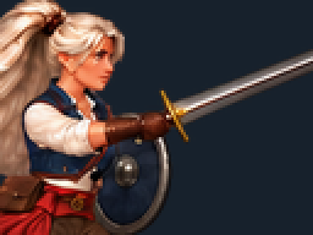
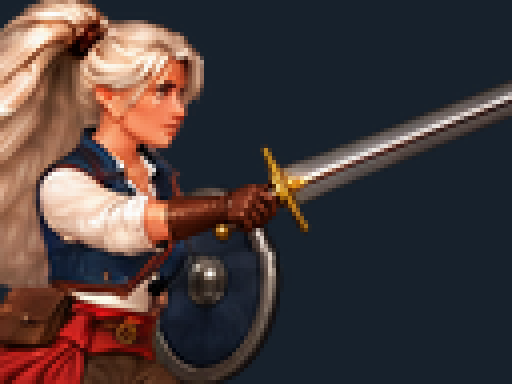

X1: wrist-to-hilt proof / one pose only
v05's sword angle changed, but its wrist-to-sword relationship is still rejected. This proof changes one local wrist/fist/hilt drawing while holding the blade angle and body fixed. It has not been propagated through the strip.
v05 key7 · source grip · 4× native pixels
v06 key7 · local AI repair proof · 4× native pixels
These views use the actual exported sprite pixels. Generated high-resolution detail is separate. The proof changes757 RGB pixels; source alpha, the protected blade/guard and all other keys are preserved.
Motion context — only key7 differs
Left: current game / preferred · Middle: v05 / wrist rejected · Right: v06 / one-key proof
Drawing jumps use saved pose-key times (shown at Heat0). The1/60s buttons step time, which may keep the same held drawing.
Loading drawing keys…
Loading the preferred game baseline, unchanged v05 and one-key grip proof…
Native 1× size and the saved frame exposure of each clip. X1: .720s at Heat 0 / .480s at fixed Heat 100. A 200ms review pause follows each action.
Scope and what remains
This is one static grip-construction test. The original blade angle, protected forward sword/guard pixels, source alpha and body outside the local repair mask remain exact. Fifteen other keys are unchanged. New hand detail does not establish correct wrist anatomy, a good moving grip or a successful whole-strip correction. The current game remains the preferred benchmark.
Repair evidence
The AI redraw was made from an enlarged opaque diagnostic crop, then downsampled and placed through one bounded RGB mask. Its high-resolution face/body redraw is not used. One manual local alignment of−1/+1px was applied to the proposal; there is no whole-pose recentering or rescaling.
Exact RGB repair mask · Placement and preservation record · Raw AI proof · Exact prompt
Source v05 review · One-key proof in Godot · Trial record